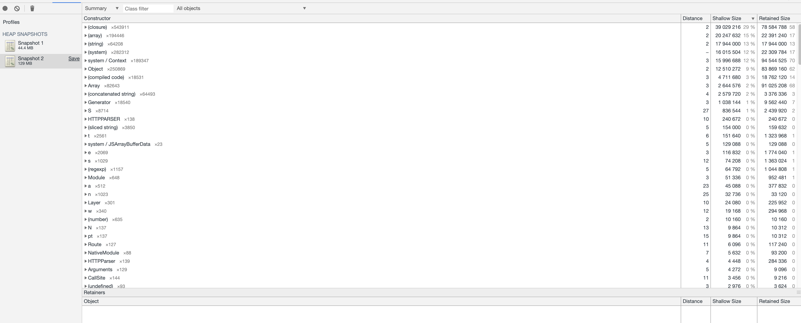

Профилирование и отладка
Несмиянов Артем
Разработчик Яндекс.Практикум
Что это?
Отладка - этап разработки компьютерной программы, на котором обнаруживают, локализуют и устраняют ошибкиЧто это?
Профилирование - сбор характеристик работы программы, таких как время выполнения отдельных методов, определение потребляемой памяти, вывод стека вызовов и т.д.Frontend
V8 — быстрый движок JavaScript (ECMA-262) от Google, используемый в Chromium браузерах

Memory Usage
Cpu Usage
Виды утечек
References- Global variables
- Multiple references
- Singleton
Виды утечек
Closures/Scopes- Recursive closures
- Require in the middle of code
- Function in loops
Виды утечек
OS and Language Objects- Descriptors: files, sockets…
- setTimeout, setInterval
- EventEmitter
Profiling

Profiling
Profiling
Profiling
Fixing
Results